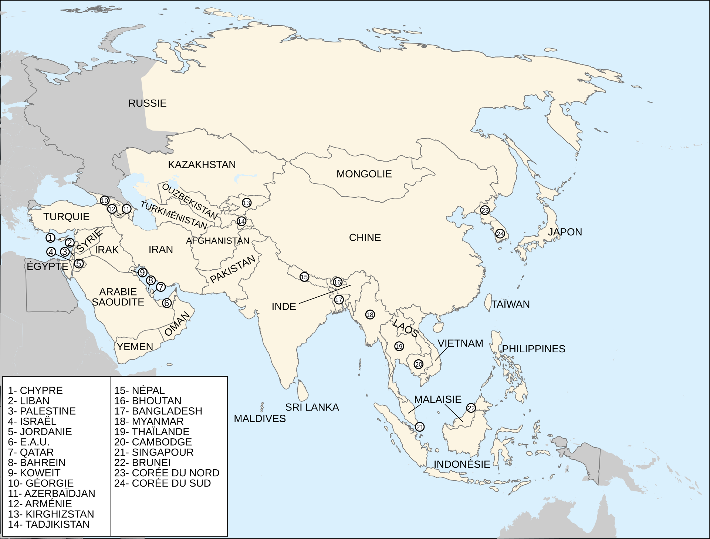
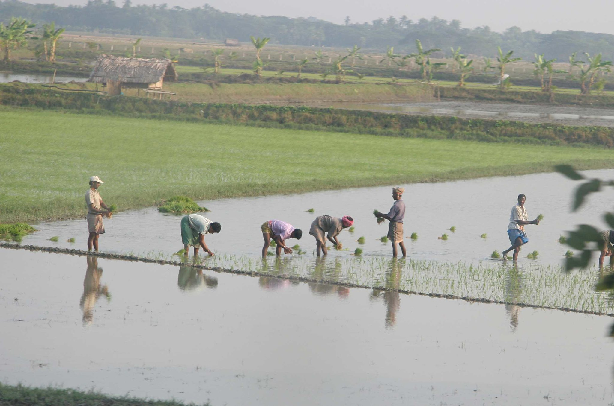
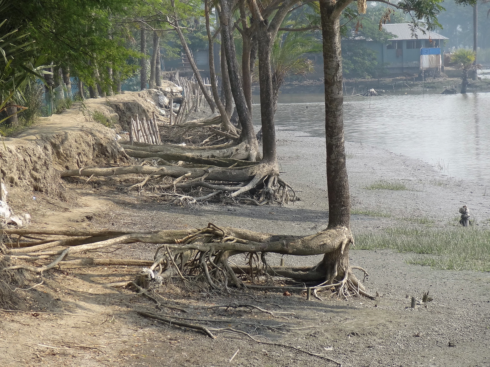
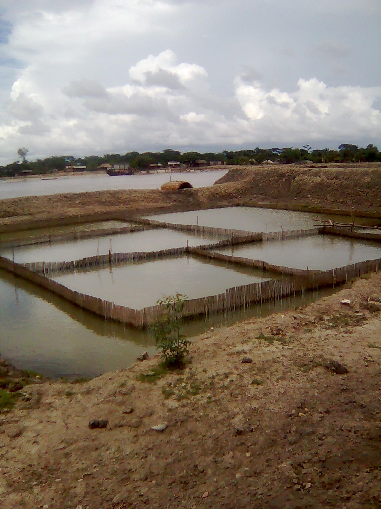
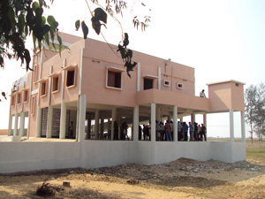
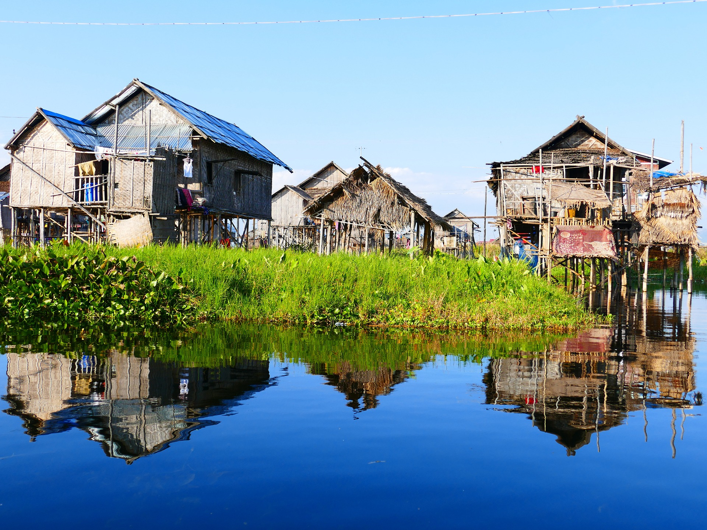
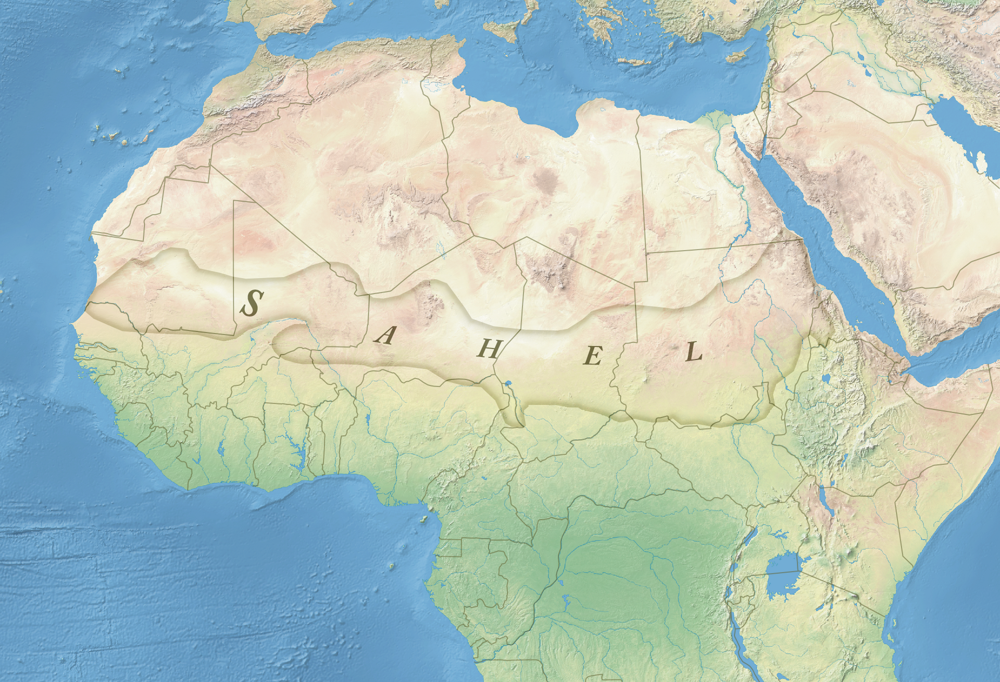
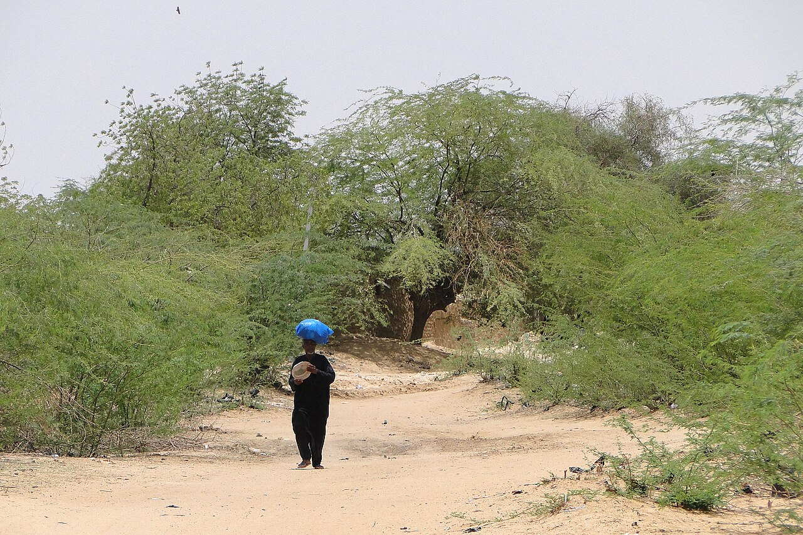

Géographie et éducation à la citoyenneté
09 / 11 territoires
Le territoire agricole soumis à des risques naturels
Territoire agricole · National · Cultiver dans une zone d'inondations
- catastrophe naturelle
- dégradation
- environnement
- milieu à risque
- mise en marché
- mode de culture
- productivité
- risque artificiel
- risque naturel
- ruralité
- Le Bangladesh
- Le Sahel

Mise en contexte
Certains territoires agricoles du monde se développent sur des espaces soumis à des risques naturels. Ils sont fragiles et leur développement devrait tenir compte de ces conditions particulières. La gestion de l'eau y est déterminante. Et parfois, l'activité agricole elle-même contribue à agrandir le milieu à risque. C'est l'idée la plus importante de cette page, et tu la retrouveras partout : le danger ne vient pas seulement de la nature. Il sera question ici du Bangladesh, un territoire où il y a trop d'eau, puis du Sahel, où il n'y en a pas assez. Deux problèmes opposés, une même question : comment cultiver malgré tout?
Concepts à l'étude
- Catastrophe naturelle : un événement naturel qui cause des dommages importants et des pertes de vies. Un cyclone en pleine mer n'est pas une catastrophe; il le devient quand il touche des populations.
- Dégradation : la détérioration d'un milieu, qui perd de sa qualité ou de sa capacité de production. Un sol devenu salé est un sol dégradé.
- Environnement : le milieu naturel dans lequel une société vit, qu'elle transforme et qui la transforme en retour.
- Milieu à risque : un territoire exposé à des phénomènes qui peuvent y causer des dommages, qu'ils viennent de la nature ou de l'activité humaine.
- Mise en marché : l'ensemble des opérations qui mènent un produit du champ jusqu'à l'acheteur.
- Mode de culture : la façon de cultiver la terre. Au Bangladesh, la riziculture inondée; au Sahel, une agriculture pluviale et l'élevage.
- Productivité : la quantité produite par rapport aux moyens employés.
- Risque naturel : un danger qui vient d'un phénomène de la nature, comme une crue, un cyclone ou une sécheresse.
- Risque artificiel : un danger créé ou aggravé par l'activité humaine, comme la coupe des mangroves, la salinisation des sols par l'élevage de crevettes ou le surpâturage.
- Ruralité : le caractère d'un milieu de campagne, où les activités agricoles occupent la plus grande place.
Situer le Bangladesh
Le Bangladesh est situé en Asie du Sud, au nord-est de l'Inde. Sa capitale est Dacca. C'est l'un des pays les plus densément peuplés du monde, et une grande part de sa population vit de l'agriculture. La majeure partie des Bangladais occupe le delta formé par trois fleuves, le Gange, le Brahmapoutre et le Meghna, qui se jettent dans le golfe du Bengale. S'y ajoutent environ 200 petits cours d'eau, si bien que 7 % de la superficie du pays est couverte d'eau. Le pays reçoit en plus environ deux mètres de pluie par année. Le territoire est une immense plaine, située pour l'essentiel à moins de 30 mètres au-dessus du niveau de la mer. Au moment de la mousson, un tiers du pays est inondé.

Source
historicair 20:46, 23 November 2006 (UTC), Asie-fr, Wikimedia Commons. Licence : Domaine public.
Source
ulricjoh, Bangladesh rice paddy workers (2011), repris dans le dossier du RECIT, Service national du RECIT, univers social. Licence : Creative Commons BY-NC-ND.La mousson
La mousson est un ensemble de vents qui soufflent en Asie du Sud. Le mot vient d'un mot arabe qui signifie « saison ». En été, elle apporte de l'air chaud et humide venu de l'océan Indien et provoque d'importantes pluies en Inde, en Asie du Sud-Est et jusqu'en Corée et au Japon.
La mousson est à la fois attendue et redoutée. Elle est indispensable aux récoltes, mais elle entraîne aussi des inondations catastrophiques. La plus grande partie des précipitations tombe entre juin et octobre.
Les crues
Une crue est le débordement passager d'un cours d'eau hors de son lit habituel. Au Bangladesh, elle revient chaque année avec la mousson. Les rivières du pays connaissent d'énormes variations de débit. Les plus forts se situent entre juillet et août, les plus faibles en mars et avril. Les débits moyens du Brahmapoutre et du Gange en période de crue sont respectivement 20 et 30 fois supérieurs à ceux de la saison sèche. Environ 15 % du pays, fait de collines et de montagnes, reste à l'abri des crues. Mais près de 56 % des terres sont habituellement inondées sous 30 centimètres à 3 mètres d'eau.
Les cyclones
Le Bangladesh a été frappé plusieurs fois dans son histoire par des cyclones tropicaux dévastateurs. La plupart des dégâts viennent de l'eau et du vent. Et il y a là une ironie : la plaine inondable du pays est très fertile, ce qui attire justement les agriculteurs. Lorsqu'un cyclone touche terre, il provoque des dommages aux bâtiments et aux infrastructures de transport, des pertes économiques pour les communautés touchées, des pertes de vie directes mais aussi indirectes à cause des maladies et des blessures, une interruption de l'approvisionnement en eau potable et en nourriture, et une coupure des routes, des ponts, de l'électricité et du téléphone.
Les deux capsules suivantes montrent deux cyclones récents, Mocha en mai 2023 et Remal en mai 2024. Compare ce que tu y vois avec la dernière barre du diagramme.
L'érosion des berges

Source
William Veerbeek, Khulna, Bangladesh (2012), repris dans le dossier du RECIT, Service national du RECIT, univers social. Licence : Creative Commons BY-NC-SA.L'érosion des berges est un problème grave qui touche de nombreuses régions du pays. Quatre causes se combinent, et elles ne sont pas toutes naturelles.
- Les cyclones et les inondations, que les changements climatiques rendent plus fréquents
- Les crues nombreuses, dues aux précipitations et à la fonte des glaciers de l'Himalaya
- L'excès de sédiments dans les rivières, causé par l'érosion des sols et par l'utilisation intensive des terres pour l'agriculture
- La déforestation, qui réduit la capacité des sols à retenir l'eau. La coupe des mangroves, en particulier, a des effets majeurs dans le delta du Gange
Cultiver malgré tout
Le Bangladesh possède des terres arables sur près de 60 % de sa superficie. Le riz en est la principale production, et le climat chaud et humide permet plusieurs récoltes par année. S'y ajoutent le thé, les pommes de terre, la canne à sucre, le jute et le millet. Le riz pousse sur des terres couvertes d'eau douce et il est à la base de l'alimentation des Bangladais. Sa culture donne du travail à beaucoup d'agriculteurs parmi les plus pauvres du pays, principalement dans le delta du Gange et du Brahmapoutre, où le sol est fertile et l'irrigation facile.
La plupart des rizières sont en plaine, certaines en terrasses dans les régions de montagne. La saison commence par le labour et l'ensemencement avant la mousson. Pendant la croissance, les rizières sont irriguées régulièrement. À la fin, les plants sont récoltés à la main ou à la machine, puis séchés et nettoyés avant d'être envoyés à l'usine. La majorité de la population rurale pauvre élève aussi du bétail : environ 80 % des paysans possèdent de la volaille et des chèvres. Le pays est également l'un des grands producteurs mondiaux d'aquaculture, surtout de crevettes et de carpes.
Quand l'agriculture crée le risque

Source
Ferdous, Chingri gher at khulna - 10, Wikimedia Commons. Licence : Creative Commons BY-SA 3.0.L'élevage de crevettes est très important pour l'économie du Bangladesh. Il génère selon certaines estimations plus de deux milliards de dollars par année et représente environ 10 % des exportations du pays. Le Bangladesh compte parmi les principaux fournisseurs de crevettes de la région Asie-Pacifique, vers les États-Unis, l'Europe et la Chine. Mais les crevettes sont élevées dans des bassins d'eau salée. Cette eau salinise les sols, ce qui détruit leur fertilité : une terre qui a servi à l'élevage de crevettes ne peut plus servir à l'agriculture.
Les mangroves, une barrière qui recule
Au coeur du delta du Gange, la forêt des Sundarbans est un site naturel unique. Cette mangrove, la plus vaste de la planète, couvre plus de 10 000 kilomètres carrés. Ses arbres résistants aux inondations forment une muraille verte qui absorbe les ondes de tempête et atténue la violence des cyclones. Pour les habitants, la forêt est aussi une source de miel, et ses eaux regorgent de poisson. Les racines très denses des palétuviers sont ce qui rend cette protection si efficace. Le Programme des Nations unies pour le développement explique que lors d'événements météorologiques extrêmes, une telle ceinture verte peut faire la différence entre la vie et la mort.
La mangrove semble aujourd'hui atteindre ses limites. La coupe illégale du bois, qui sert surtout à loger une population en expansion, a dégarni les abords de la forêt. Les barrages construits en amont des fleuves ont réduit son alimentation en eau douce, tandis que la montée du niveau des mers y introduit davantage d'eau salée. Or cette salinité décime plusieurs espèces d'arbres précieuses. À l'échelle mondiale, la surface des mangroves serait passée d'environ 200 000 kilomètres carrés avant leur dégradation par l'humain à environ 140 000 aujourd'hui.
Réduire les dégâts
Cinq façons de réduire les dégâts
Choisis une mesure
Malgré l'ampleur des phénomènes qui frappent le pays chaque année, il est possible d'en atténuer les effets. Ces mesures viennent des citoyens, des agriculteurs, de l'État ou d'organisations internationales. Aucune ne règle tout, et c'est en les combinant qu'on obtient un résultat.
Pour protéger les habitants des zones à risque, le gouvernement agit sur trois axes : mettre en place des systèmes de prévision et d'alerte rapides, élaborer des plans de secours qui fournissent nourriture, eau potable, abris et soins, et renforcer les infrastructures de transport et de communication dans les régions les plus vulnérables.

Source
Banque mondiale, Abris anticycloniques (2013), repris dans le dossier du RECIT, Service national du RECIT, univers social. Licence : Creative Commons BY-NC-SA.
Source
LoggaWigler, Maison sur pilotis, reprise dans le dossier du RECIT, Service national du RECIT, univers social. Licence : Image libre, Pixabay.Le Sahel, le problème inverse

Source
Munion, Map of the Sahel, Wikimedia Commons. Licence : Creative Commons BY-SA 3.0.Le Sahel est une bande de terres arides et semi-arides située au sud du Sahara, qui traverse l'Afrique du Sénégal à Djibouti. Il compte plus de 135 millions d'habitants et, comme le Bangladesh, il vit de son agriculture : celle-ci et le pastoralisme emploient environ 70 % de la population active. Mais tout y est à l'envers. Là où le Bangladesh reçoit deux mètres de pluie par année, le Sahel en reçoit de 200 millimètres au nord à 600 au sud. La saison des pluies dure environ quatre mois, entrecoupée de longues périodes sèches. Et près de 95 % de l'agriculture africaine est pluviale, c'est-à-dire qu'elle dépend entièrement de la pluie qui tombe, sans irrigation.
Source : Agence française de développement et Fonds international de développement agricole
Un risque qui vient des deux côtés

Source
Adam Jones, Ph.D., Sahel Scene - Dori - Sahel Region - Burkina Faso, Wikimedia Commons. Licence : Creative Commons BY-SA 3.0.Le risque naturel est la sécheresse et sa variabilité : une saison des pluies qui commence en septembre plutôt qu'en juillet suffit à ruiner une récolte. S'y ajoutent des causes humaines : l'urbanisation, la surexploitation des sols, les feux de brousse et le surpâturage. Résultat, environ 30 % des terres cultivables du Sahel sont dans un état de dégradation avancée, et la désertification touche environ 45 % de la superficie du continent africain. On estime à 29,2 millions le nombre de Sahéliens en situation d'insécurité alimentaire.
La Grande Muraille verte
Lancée en 2007 par l'Union africaine, cette initiative réunit onze pays : le Sénégal, la Mauritanie, le Mali, le Burkina Faso, le Niger, le Nigeria, le Tchad, le Soudan, l'Érythrée, l'Éthiopie et Djibouti. Elle vise à restaurer 100 millions d'hectares de terres dégradées d'ici 2030, le long d'une bande de quelque 8 000 kilomètres au sud du Sahara, à séquestrer 250 millions de tonnes de carbone et à créer 10 millions d'emplois.
Le projet Minecraft
Le Service national du RÉCIT propose une tâche où l'élève doit illustrer quatre choses : le mode de culture du territoire agricole, la façon dont l'action humaine affecte les barrières naturelles qui protègent les côtes, la façon dont on arrive à minimiser les dégâts lors d'inondations, et les effets des changements climatiques, de la mousson et des cyclones.
Sources
- Service national du RÉCIT en univers social
- L'agriculture dans les territoires à risque, dossier du RÉCIT
- Alloprof, le territoire agricole à risque
- Programme des Nations unies pour le développement
- Agence française de développement, la Grande Muraille verte
- Fonds international de développement agricole, la Grande Muraille verte
- National Geographic, le recul des Sundarbans